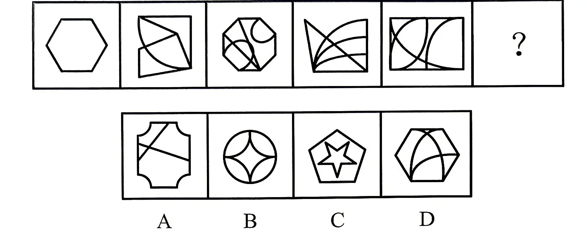
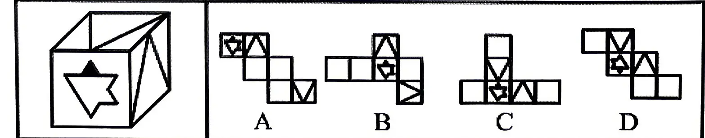
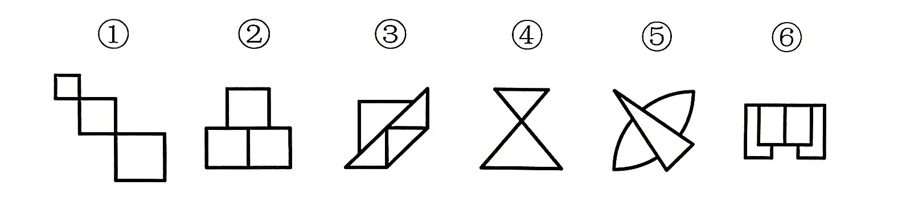
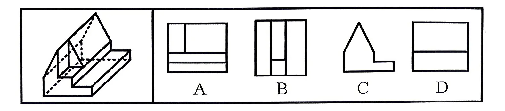
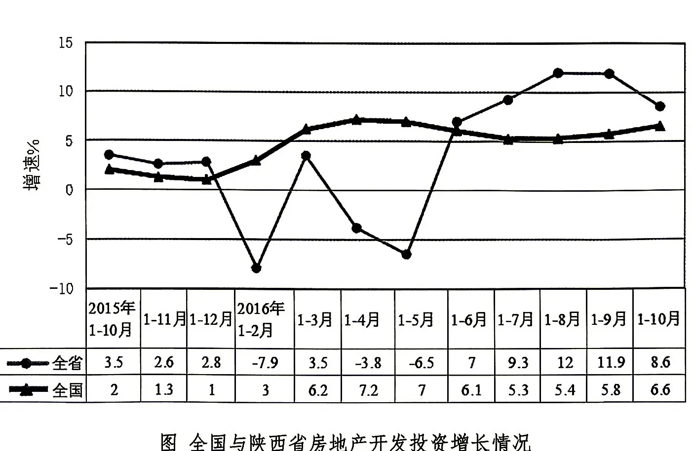
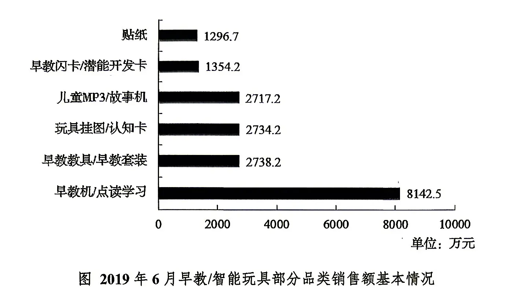
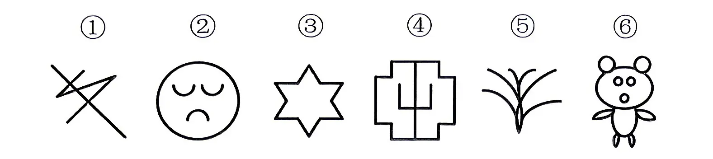
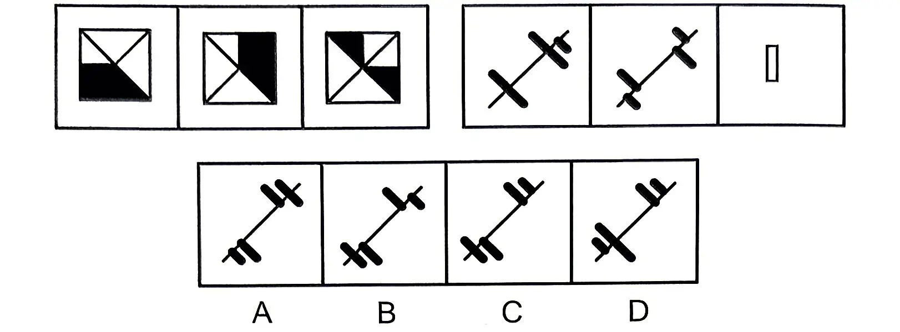
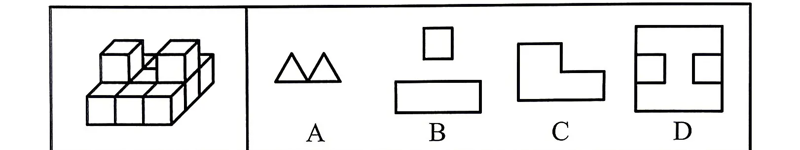
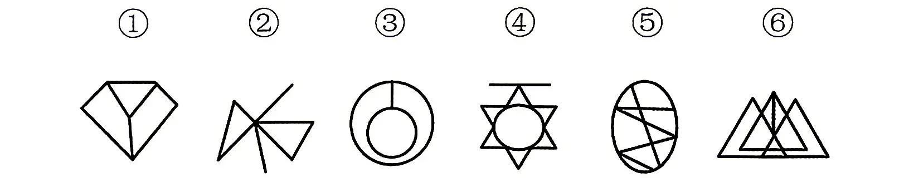

2026年9月16日出版的《求是》杂志发表习近平的重要文章《在加强基础研究座谈会上的讲话》。关于加强基础研究，下列说法正确的是（）。
①要优化基础研究系统布局，加快形成战略性、前瞻性、体系化布局
②要壮大基础研究人才队伍，基础研究归根结底靠高水平人才
③要加强对基础研究的支持保障，勇于破除思想障碍和制度藩篱，为基础研究提供长期稳定的投入保障和政策支持
④要拓展基础研究国际合作，主动融入全球创新网络，在开放合作中提升原始创新能力
A.1 项 B.2 项 C.3 项 D.4 项
全面从严治党是新时代党的自我革命的伟大实践，开辟了百年大党自我革命的新境界。下列有关党的自我革命说法正确的是：
A.自我革命是跳出历史周期率的第一个答案
B.勇于自我革命是中国共产党最大的优势、最鲜明的品格
C.批评与自我批评是最彻底的自我革命，是全面从严治党的“必答题”
D.要把不能腐的强大震慑效能、不想腐的刚性制度约束、不敢腐的思想教育优势融于一体
《永久基本农田保护红线管理办法》贯彻落实“坚持实行最严格的耕地保护制度”的要求，将建立（）作为重点。
A.永久基本农田保护红线 B.兼顾耕地保护和农业生产的保护机制 C.集中连片的永久基本农田 D.永久基本农田“优进劣出”的管理机制
党的二十大报告指出，实现建军一百年奋斗目标，开创国防和军队现代化新局面。以下关于军队建设说法正确的有（）。
①坚持政治建军、改革强军、科技强军、教育强军、依法治军
②党对军队的绝对领导发端于南昌起义、奠基于三湾改编、定型于古田会议
③建军百年要基本实现国防和军队现代化
④如期实现建军一百年奋斗目标，加快把人民军队建成世界一流军队，是全面建设社会主义现代化国家的战略要求
A.②④ B.①③ C.②③ D.①②
下列构成盗窃罪的是（）。
A.张某无意间将李某埋藏在屋外树下的10万元现金挖出，并据为已有，拒不交出
B.胡某在任邮政局营业员期间盗取储蓄的存折密码，然后冒充储户在取款凭单上签字，提取现金40余万元
C.张某在给客户维护网络的过程中，获取该客户的网络账户和密码，后张某和朋友利用该账户的密码在网吧玩网游共消费3000余元
D.赵某意欲窃走丁某的手提包，在其刚拿到手提包准备离开时被丁某发现，丁某当场抓住手提包，但因力气太小，最终还是被赵某拿走
下列选项中，不符合《中华人民共和国民法典》规定的是（）。
A.因胁迫结婚的，即使后来被胁迫人同意，其婚姻也是无效的
B.直系血亲和三代以内的旁系血亲禁止结婚
C.结婚年龄，男不得早于二十二周岁，女不得早于二十周岁
D.因感情不和分居满二年的，调解无效，应准予离婚
竞争性是市场经济的基本特点之一，下列现象最能体现该特点的是（）。
A.临近春节，某农产品的市场价格从每斤3元涨到了每斤6元
B.某演唱会门票一票难求，门票价格被炒到原票价的三倍以上
C.某企业为扩大产品市场占有率，组建研发团队并经常推出新产品
D.某酒厂为了进入某地市场，给予当地连锁超市负责人高额回扣
下列表示机会成本的是（）。
A.厂商雇佣李某，每月支付李某工资3000元
B.厂商运用自己所拥有的原料可生产一辆货车或一辆小型客车，厂商选择生产货车，放弃生产价值10万元的小型客车
C.厂商从市场上购买原材料，支付价款10万元
D.厂商从银行贷款10万元，需每月支付利息1000元
农村是一片广阔天地，同时也是监管的薄弱地带，由此也每每招引来________的坑农行为。像“量子赋能”这样的骗局之所以能够在农村扎根，也正是因为有人瞅准了这里的薄弱之处。毕竟，外边的人可能对这类坑农骗局________，但对于整日和土地打交道的农民来说，在公司“销售技巧”的忽悠下，很有可能成为受害者。依次填入画横线部分最恰当的一项是：
A.五花八门 漠不关心 B.千奇百怪 视若无睹 C.形形色色 不以为意 D.不拘一格 掉以轻心
郡县治，天下安。县城自古以来就是国家安全和发展的重要基石。作为我国城镇体系的重要一环，县城发挥着“城尾乡头”的衔接作用。推进以县城为重要载体的城镇化能够有效推动城乡融合发展，助推建立彰显优势、协调联动的城乡区域发展体系。我国下一阶段推进城镇化工作的重点是大中小城市协调发展，既要发挥大城市集聚效应，也要重视中小城市，特别是县城在农业转移人口市民化方面的巨大潜力。根据该段内容最不可能推断的是：
A.推进县城城镇化是重要工作 B.国家长治久安要从县城治理开始 C.城乡区域发展体系包括县城城镇化 D.县城将吸纳大量农业转移人口
①更令人震惊的是，这些土著们在语言和文化上表现出超乎想象的统一性
②他们没有航海设备，只有原始的舟筏，却在占据了将近地球三分之一面积的大洋中，找到了一个个孤悬海上的小岛
③他们有着相似的风俗习惯，在相隔极远、完全陌生的岛上，竟然可以用同一种语言进行简单交流
④原始的南岛语族，创造了航海奇迹
⑤这使得许多世纪后，“地理大发现”浪潮中驶入太平洋的西方航海家们惊异地发现，几乎他们每找到一处新的岛屿，都已有了土著们居住过的痕迹
⑥然后定居其上，传承和发展着自己的文化
将上述6个句子重新排列，语序正确的是：
A.④②⑥⑤①③ B.③①②⑥④⑤ C.④⑤②①③⑥ D.②⑥⑤④③①
古籍借阅的保护与利用能够求取最大公因数，即如何能够满足所有人的权利，又能够使得古籍本身不会受到影响和破坏。显然，二者不是截然对立、非此即彼的。尤其在现代信息技术如此成熟的语境下，________。比如，对历史古籍进行影印，制作复制本；或者对历史古籍进行扫描，形成电子版本。这些足以让古籍分身有术，古籍妥存与向所有人开放不再冲突。填入画横线部分最恰当的一项是：
A.古籍借阅的保护和利用需要开拓思路 B.古籍本身可以不再是知识传播唯一的载体 C.普通民众对古籍阅读的需求在日益增长 D.引导读者利用电子资源或许是更好的办法
集贸市场销售苹果 5 元/个和火龙果 3 元/个，花光 61 元最多可购买这两种水果共多少个？
A.13 B.16 C.18 D.19
一辆汽车第一天和第二天的行驶时间之比为3：4，第二天与第三天行驶路程相同，第三天行驶时间为5小时，第一天行驶400km，三天全程的平均速度为80km/h。问第二天的平均速度是多少km/h?
A.70 B.75 C.80 D.85
甲、乙两个工程队共同参与一项建设工程。原计划由甲队单独施工30天完成该项工程的1/3后，乙队加入，两队同时再施工15天完成该项工程。由于甲队临时有别的业务，其参加施工的时间不能超过36天，那么为全部完成该项工程，乙队至少要施工多少天？
A.30 B.24 C.20 D.18
甲、乙两人需托运行李。托运收费标准为10千克以下6元/千克，超出10千克的部分每千克收费标准比10千克以下略低一些。已知甲、乙两人托运费分别为109.5元、78元，甲的行李比乙的重了50%。那么，超出10千克部分每千克收费标准比10千克以内的低了多少元？
A.1.5 B.2.5 C.3.5 D.4.5
某单位所有员工都参加艺术、科学、人文三类书籍的阅读活动，每名员工至多阅读2种书籍，阅读1种书籍员工人数比阅读2种书籍的人数多一半，阅读艺术类书籍的人数是阅读科学类书籍人数的2/3，阅读科学类书籍人数是阅读人文类书籍人数的4/5。问该单位至少有多少人？
A.20 B.25 C.30 D.50
泳池进出水用的机器，往泳池里注水时，每工作30分钟，停3分钟；把泳池里的水抽空时，每工作30分钟，停5分钟，抽水的速度是注水速度的2倍，如果把泳池水抽完用了2小时50分钟，那么把泳池里注满水用的时间是多少？
A.4小时17分钟 B.5 小时 27 分钟 C.5 小时 36 分钟 D.5 小时 41 分钟
某单位组织志愿者参加公益活动，有8名员工报名，其中2名超过50岁。现将他们分成3组，人数分别为3、3、2，要求2名超过50岁的员工不在同组，则不同分组的方案共有：
A.120 种 B.150 种 C.160 种 D.210 种
元宵节时某单位工会组织猜灯谜活动，需要在标号1、2、3、4四个灯笼上贴上四道不同难度的谜语，1号灯笼对应难度最低的灯谜，2、3、4号灯笼对应灯谜的难度依次递增。工作人员安排了一位志愿者帮忙贴灯谜，但由于匆忙忘记告诉志愿者灯谜的难度，那么灯谜位置全部贴错的概率是：
A.3÷8 B.5÷12 C.1÷3 D.1÷24
某单位两座办公楼之间有一条长204米的道路，在道路起点的两侧和终点的两侧已，各栽种了一棵树。现在要在这条路的两侧栽种更多的树，使每一侧每两棵树之间的间隔不多于12米。如栽种每棵树需要50元人工费，则为完成栽种工作，在人工费这一项至少需要做多少预算？
A.800 元 B.1600元 C.1700 元 D.1800元
从所给的四个选项中，选出最合适的一个填入问号处，使之呈现一定的规律性。

左边给定的正方体纸盒，能够由下面哪一项折叠而成？

把下面六个图形分为两类，使每一类图形都有各自的共同特征或规律，分类正确的一项是：

A.①②③，④⑤⑥ B.①③⑤，②④⑥ C.①⑤⑥，②③④ D.①③⑥，②④⑤
左图为给定的多面体，从任一角度观看，下面哪一项不可能是该多面体的视图？

民事法律行为，是指民事主体通过意思表示设立、变更、终止民事法律关系的行为，其核心特征是法律根据当事人表达的意思来赋予法律效力，也就成为当事人获取权利、承担义务的根据。民事法律行为可以基于双方或者多方的意思表示一致成立，也可以基于单方的意思表示成立。根据上述定义，下列不属于民事法律行为的是（）
A.赵某不慎将自家小狗丢失，发布悬赏广告 B.刘某在出国之前把爱狗委托给宠物店照料 C.小区业主委员会做出更换物业公司的决定 D.村民老王在自家宅基地上建造了两层楼房
紧急避险，是指为了国家、公共利益、本人或者他人的人身、财产和其他权利免受正在发生的危险，不得已采取的损害除本人和不法侵害人以外的第三人合法利益的行为。紧急避险所造成的损害一般应小于所避免的损害。根据上述定义，下列不属于紧急避险的是（）
A.工地失火，林某认为火势可能蔓延至距工地20米左右的自家仓库，便指挥工人拆除了该仓库
B.张某烧荒开垦土地，不慎引燃了邻居赵某的树苗，为阻止火势蔓延烧毁整片山林，张某急忙将火场周边果树砍除，开辟出防火带，造成赵某数万元经济损失
C.持续多日的强降雨造成某水库水位迅速上涨，威胁水库大坝及下游人民生命财产安全，该县应急指挥部急令水库行洪放水，造成下游多家养鱼专业户大量鱼苗冲走流失，经济损失惨重
D.公安干警陈某驾驶警车追捕嫌犯，在正常拐弯时突然发现钱某骑着电动车违章迎面驶来，陈某急忙避让，将路边汽车撞坏
工欲善其事：必先利其器
A.直待凌云：始道高 B.心有所信：方能行远 C.若无闲事挂心头：便是人间好时节 D.问渠那得清如许：为有源头活水来
行政执法：监督：访谈
A.研发：创新：实验 B.报告：调研：分析 C.治疗：诊断：检查 D.生产：质检：抽样
兵：骑兵：学习标兵
A.峰：山峰：眉峰 B.水：温水：银行流水 C.子：篮子：生物分子 D.球：水球：流浪地球
某研究团队成功开发了一种源自小胶质细胞的纳米囊泡，该囊泡能够同时激活大脑中的巨自噬和伴侣蛋白介导的自噬两大通路，有效清除大脑垃圾，并成功改善了阿尔茨海默病小鼠的认知功能，显著减轻神经炎症。研究人员据此认为，该纳米囊泡为治疗人类阿尔茨海默病提供了新思路。以下哪项如果为真，最能削弱上述观点？
A.该纳米囊泡在人体中会引发不可逆的自身免疫反应，导致严重神经损伤
B.阿尔茨海默病患者通常伴有运动障碍、语言能力丧失以及生活自理能力下降等情况
C.该纳米囊泡虽能缓解阿尔茨海默病小鼠的症状，但未延缓其认知功能衰退的最终进程
D.大多数阿尔茨海默病患者确诊后，认知与身体功能会持续衰退，并在数年内因并发症死亡
有甲、乙、丙、丁四支球队参加比赛，对于这些球队能否晋级，四位观众有如下判断：赵：如果甲晋级，那么乙也能晋级。钱：除非丙晋级，否则乙不能晋级。孙：只有丁晋级，甲才能晋级。李：如果丁晋级，那么丙不能晋级。比赛结束后，四位观众的判断均符合比赛结果。由此可以推出（）。
A.甲不能晋级 B.乙不能晋级 C.丙不能晋级 D.丁不能晋级
2016 年 1-10 月，陕西省房地产开发投资 2203.98 亿元，同比增长 8.6%，增速比 1-9 月回落 3.3 个百分点，比 1-8 月回落 3.4 个百分点，高于上年同期增速 5.1 个百分点。与全国相比，我省房地产开发投资增速月度波动较大，下半年以来总体回升，1-10 月增速高于全国平均增速 2 个百分点。
1-10 月，全省商品房销售面积 2412.48 万平方米，同比增长 9.3%，增速比 1-9 月提高 1.4 个百分点；商品房销售额 1333.55 亿元，增长 11.7%，增速提高 2.6 个百分点。
图 全国与陕西省房地产开发投资增长情况（保留卷面原图）

表 2016 年 1-10 月陕西省及各市（区）房地产开发投资情况（数值据原表逐格核对；“总量 / 同比增长”列为 1-10 月房地产开发投资口径；“波动”列为增速比 1-9 月波动，单位：百分点）
| 地区 | 总量（亿元） | 同比增长（%） | 增速比 1-9 月波动（百分点） |
|---|---|---|---|
| 全省 | 2203.98 | 8.6 | -3.3 |
| 西安市 | 1566.42 | 4.3 | -3.2 |
| 铜川市 | 33.95 | 46.7 | 9.2 |
| 宝鸡市 | 95.84 | 30.6 | -2.5 |
| 咸阳市 | 150.15 | 2.5 | -0.1 |
| 渭南市 | 81.36 | 5.5 | -5.9 |
| 延安市 | 72.17 | 74.7 | -37.0 |
| 汉中市 | 63.96 | 19.9 | -3.2 |
| 榆林市 | 34.33 | -10.8 | 0.7 |
| 安康市 | 80.20 | 50.5 | -4.5 |
| 商洛市 | 15.96 | 3.5 | -0.6 |
| 杨凌示范区 | 9.63 | 44 | -3.8 |
注：此表中部分数据因四舍五入的原因，存在总计与分项合计不等的情况。
2016年1-10月间，陕西房地产开发投资累计增速相差最大的两个相邻月份，其累计增速相差：
A.10.1 个百分点 B.11.4% C.11.0% D.13.5 个百分点
2016年1-10月陕西省各市（区）房地产开发投资同比增速最快的地市，其房地产投资额比榆林市多多少倍？
A.1.6 B.2.6 C.1.1 D.2.1
2014年1-10月份全省房地产开发商投资额约为：
A.2020 亿元 B.1960 亿元 C.1670 亿元 D.2200 亿元
表 2023 年我国主要机场吞吐量统计（旅客吞吐量：百万人；货邮吞吐量：万吨；起降架次：万次；数值据原表逐格核对）
| 机场 | 旅客排名 | 旅客 2023 | 旅客 2022 | 货邮排名 | 货邮 2023 | 货邮 2022 | 起降排名 | 起降 2023 | 起降 2022 |
|---|---|---|---|---|---|---|---|---|---|
| 全国 | — | 754.31 | 679.77 | — | 1258.5 | 1199.4 | — | 731.54 | 660.32 |
| 北京首都 | 1 | 83.71 | 81.93 | 2 | 184.37 | 179.99 | 1 | 56.78 | 55.72 |
| 广州白云 | 2 | 52.45 | 48.31 | 3 | 130.97 | 124.88 | 2 | 39.44 | 37.33 |
| 上海浦东 | 3 | 47.19 | 44.88 | 1 | 292.85 | 293.82 | 3 | 37.12 | 36.17 |
| 上海虹桥 | 4 | 35.60 | 33.83 | 6 | 43.51 | 42.98 | 7 | 24.39 | 23.49 |
| 成都双流 | 5 | 33.44 | 31.60 | 5 | 50.14 | 50.80 | 6 | 25.05 | 24.27 |
| 深圳宝安 | 6 | 32.27 | 29.57 | 4 | 91.35 | 85.49 | 4 | 25.74 | 24.01 |
| 昆明长水 | 7 | 29.69 | 23.98 | 9 | 29.36 | 26.23 | 5 | 25.55 | 20.13 |
| 西安咸阳 | 8 | 26.04 | 23.42 | 15 | 17.89 | 17.48 | 8 | 22.60 | 20.44 |
| 重庆江北 | 9 | 25.27 | 22.06 | 11 | 28.01 | 26.86 | 9 | 21.46 | 19.53 |
| 杭州萧山 | 10 | 22.11 | 19.12 | 7 | 36.81 | 33.84 | 11 | 19.06 | 16.63 |
表中2023年货邮吞吐量同比减少最多的机场其旅客吞吐量的同比增长量比最少的机场多多少万人？
A.14 B.47 C.66 D.97
2019 年 6 月，早教/智能玩具产品销售额同比增长 82.0%，占玩具产品市场份额的 9.4%，销量达 219 万个。其中早教/智能玩具店铺数为 1136 家。在早教/智能玩具产品细分类目下，最受欢迎的品类早教机/点读学习产品销售额为 8142.5 万元，占到早教/智能玩具产品销售额的 40.1%，同比增长 231.2%，环比增长 173.4%。因产品特性价格差距较大，早教教具/早教套装产品均价为 316.84 元，早教机/点读学习产品均价为 399.08 元，而玩具挂图/认知卡产品均价为 32.72 元。
图 2019 年 6 月早教/智能玩具部分品类销售额基本情况（保留卷面原图）

2019年6月，早教机/点读学习产品销售量比早教教具/早教套装产品多（）万个。
A.11.76 B.9.87 C.7.23 D.1.82
能够从上述材料中推出的是：
A.2019年6月，早教教具/早教套装与玩具挂图/认知卡的市场销售额相同
B.2019年6月，平均每家早教/智能玩具店铺的销量突破1900个
C.2019年6月，早教机/点读学习产品销售额占玩具产品的市场份额的5%以上
D.2019年6月，各类早教/智能玩具产品的销售额均突破千万
截至 2023 年底，我国网民规模达到 8.29 亿，全年新增网民 5653 万，互联网普及率达 59.6%，较 2022 年底提升 3.8 个百分点，超过全球平均水平 2.6 个百分点。其中，手机网民规模达 8.17 亿，较 2022 年底增加 6433 万。
截至 2023 年底，我国 IPv4 地址数量 3.39 亿个，同比增长 0.06%，IPv6 地址 23430 块，同比增长 75.3%。网站总数 523 万个，同比下降 1.9%，网页数量 2816 亿个，同比增长 8.2%。
截至 2023 年底，我国域名总数为 3792.8 万个，同比减少 1.4%，其中“.CN”域名总数为 2124.3 万个，同比增长 1.9%。
截至 2023 年底，全国固定宽带用户达到 4.07 亿户，全年净增 5884 万户，其中 100Mbps 及以上接入速率的固定宽带用户超过 7 成。截至 2023 年底，我国 IDC 企业达到 1923 家，IDC 机房数量达到 5580 个，同比新增 51 家，机房数量增长 48%。
（注：互联网普及率为网民人数占人口总数的百分比）
2023年，我国网民规模同比增长：
A.6.8% B.7.3% C.8.6% D.9.4%
截至2023年底，我国手机网民规模占全国人口总数的比重为：
A.58.7% B.69.6% C.80.5% D.98.6%
截至2023年底，我国域名总数中“.CN”域名总数比其他域名总数多多少倍？
A.1.33 B.1.27 C.0.33 D.0.27
截至2023年底，下列选项中同比变化幅度最小的是：
A.网站总数 B.IPv4 地址数量 C.“.CN”域名总数 D.域名总数
不能根据上述材料推出的是：
A.截至2022年底，我国手机网民规模超过7.5亿
B.截至2023 年底，全球互联网普及率为62.2%
C.截至 2023 年底，平均每家IDC 企业拥有 IDC 机房数量高于上年同期
D.截至2023 年底，我国100Mbps及以上接入速率的固定宽带用户超过 2.8 亿户
实现中华民族伟大复兴，必然要求推动中华文化繁荣兴盛，建设社会主义文化强国。下列关于铸就社会主义文化新辉煌，说法正确的有（）。
①在新的起点上继续推动文化繁荣、建设文化强国、建设中华民族现代文明，是新时代新的文化使命
②中华优秀传统文化是中华文明的智慧结晶和精华所在，是中华民族的根和魂
③中华文明具有连续性、创新性、统一性、包容性、竞争性的突出特性
④不断提升国家文化软实力和中华文化影响力，是满足人民精神文化需求、保障人民文化权益的基本途径
A.1 项 B.2 项 C.3 项 D.4 项
下列有关新时代爱国统一战线，说法错误的是（）。
A.党对统一战线的领导主要是组织领导
B.全体社会主义劳动者和拥护社会主义的爱国者属于爱国统一战线
C.引导各族群众牢固树立休戚与共、荣辱与共、生死与共、命运与共的共同体理念
D.统一战线是实现中华民族伟大复兴的重要法宝
现要在一块长25公里、宽8公里的长方形区域内设置哨塔，每个哨塔的监视半径为5公里。如果要求整个区域内的每个角落都能被监视到，则至少需要设置多少个哨塔？
A.7 B.6 C.5 D.4
把下面六个图形分为两类，使每一类图形都有各自的共同特征或规律，分类正确的一项是：

A.①②③，④⑤⑥ B.①③④，②⑤⑥ C.①③⑥，②④⑤ D.①③⑤，②④⑥
从所给的四个选项中，选出最合适的一个填入问号处，使之呈现一定的规律性。

左图为11个相同小正方体组合成的多面体，将其从任一面剖开，右边哪一项不可能是该多面体的截面？

把下面六个图形分为两类，使每一类图形都有各自的共同特征或规律，分类正确的一项是：

A.①②③，④⑤⑥ B.①③⑤，②④⑥ C.①⑤⑥，②③④ D.①④⑤，②③⑥
社会学：综合性学科
A.微型计算机：计算机 B.气管：循环系统 C.蜜蜂：蜂蜜 D.法官：法院
某社区推出文化惠民新举措，计划在“十一”黄金周七天（周一至周日）举办露天电影放映活动。每天放映2部，共有5部科幻片、3部警匪片、3部武侠片、2部战争片和1部爱情片可供放映。已知：(1）除了2部科幻片安排在周四外，其余六天每天放映的2部电影都属于不同类别（2）爱情片安排在周日(3）科幻片和武侠片没有安排在同一天(4）警匪片和战争片没有安排在同一天根据以上要求，下列哪项中的两部电影不可能安排在同一天放映？（）
A.警匪片和爱情片 B.科幻片和警匪片 C.武侠片和战争片 D.武侠片和警匪片
2016年1-10月全省商品房平均价格比上年同期增长：
A.1.2% B.1.6% C.2.2% D.2.8%
根据上述材料，下列说法正确的是：
A.2023年，全国机场货邮吞吐量同比增速低于起降架次同比增速
B.2023年，完成飞机起降架次 20万次以上的机场为12个
C.2023年，北京首都机场的起降架次高于上海浦东机场和上海虹桥机场之和
D.2023年，全国机场旅客吞吐量比上年增长15%以上